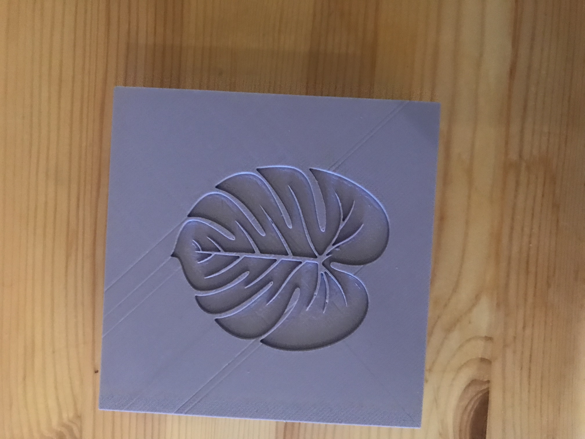

A6: Molding and Casting - Leaf Stamps

Source Files: Rhino File STL File 3D Print File
Design Process
For this project I wanted to make coaster but I wanted them to be a unique shape... so I opted for leaf shape. I found this stl file on thingsverse. So after looking at the file. I started looking into the design I decided to 3D print my outer first mold. In order to do that I started the rihno file and watching the tutorial of Nadia's on how to build the outer box case.
I started by working on the rhino file and making boxes
Then I extruded the parts. I started out line the boxes and extruded and caped the outer box to be 2.5in and inner box to be 2.2 in.
Printing Process
After finishing design in Rhino, I exported the Stl files to Dremel. After that, I tried to resize my leaf. When resizing I ran into issues about how much height I wanted for my leaf and estimately I reduced the side of it. Through resizing I made it to be about .8 in of thickness thinking it would be enough got the mold.
When using Dremel I converted all the in to mm. I didn't realize it was checked uniform settings. So it messed up my leaf. I realized that after the mold was printed. So, appraently it turned out to be a leaf stamp instead of coasters.

After the getting into the print. Below is the outer mold:
Omoo Mold
I started on with taking an estimate of Part A and Part B into a cup and mixed it rigorusly until proper mixed and it was a purple color so.. I guessed that it will cure well now. I poured it into the mold. And left it overnight to cure. It surprisingly turned out fine..

Plaster and Creating the stamps
After setting the mold, I started with the borrowed plaster from Lucas from the mill. Even though it was easy but I had not worked with plaster before so I had no idea where to start with. So, from what I heard in class I mixed parts equally but it turned out to be thin and I started getting crack in the leaf.
So, I tried to do less water in the second one but still it cracked and kept cracking.
So, eventually I used lesser water than before and it worked out finally! phew!
Acknowledgement
Shoutout to Lucas and Megha for help and advice! All of them were such a great help.